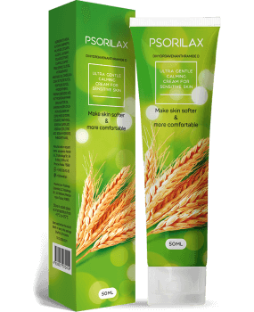
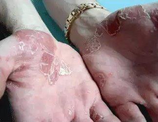

Üdv! Barankovics Katának hívnak, és 36 éves vagyok. Úgy döntöttem, elmesélem a történetemet arról, hogyan küzdöttem a pikkelysömörrel. Ez egy kicsit érzékeny téma, különösen a nők számára. Nem igazán könnyű beszélni róla… A pikkelysömör egy komplikált betegség , amelynek esztétikai vonzata is van. Az élet gyötrelmessé válhat, amikor ronda és visszataszító foltok borítják az ember bőrét. A viszketés, duzzadás és hámlás mellett még azokkal is szembesülnöd kell, akik a hátad mögött kibeszélnek. Sokan ráadásul azt hiszik, hogy a pikkelysömör ragályos. Épp ezért azok, akik pikkelysömörtől szenvednek, szinte elszigetelődnek a társadalomtól és ezért nem élhetnek normális életet… Bár én olyan korban vagyok, amikor már nehezen tud megbántani mások véleménye, de azért ez még számomra is kemény dolognak bizonyult…

Ez a történet körülbelül öt évvel ezelőtt kezdődött. Egy nap zuhanyoztam, amikor egyszer csak hegeket éreztem a bőrömön, könyöktájékon. A gyulladás először ezeken a területeken jelentkezett. Rózsaszín foltoknak tűntek, amelyek erősen ki voltak dörzsölődve. Kozmetikai krémet kentem a területre. Azt hittem, a nem megfelelő ápolás eredményeképpen csupán kiszáradt a bőröm. Úgy értem, mindig megfelelően ápolom magam, és gondosan ki szoktam választani milyen kozmetikai és testápolási termékeket használok. Soha nem volt még allergiám.
Körülbelül három hét múlva a szokatlan foltok elkezdtek szétterjedni, amitől egy kissé elkezdtem aggódni. Azonnal elmentem egy bőrgyógyászhoz. Miután körültekintően megvizsgált az eredmény, azaz a diagnózis pikkelysömör volt. Teljesen ledöbbentem! Az orvosom a szokásos terápiát írta elő. Hormonális gyógyszerek (kenőcsök és testápolók) és homeopátiás kezelés (tengeri sós és gyógynövényes fürdő). A kezelés csak átmeneti eredményeket hozott. A foltok elszíneződtek, és az egyéb tünetek (viszketés és gyulladásos reakciók) eltűntek. Ugyanakkor viszont, amikor befejeztem az intenzív kezelést, és elkezdtem a fenntartó kezelést, az összes problémám visszatért. Sőt, mi több, a hormonális kezelés után a foltok látszólag gyorsabban kezdtek el megnőni. Ez az egész körülbelül 2,5 éven át tartott. Végül a pikkelysömör tovább terjedt mindkét kezem teljes felületére. Teljesen megdöbbentem, amikor a betegség jelei már a lábamon és a fenekemen is jelentkezni kezdtek. Ezután szinte megőrültem, de helyzet csak rosszabb lett attól, hogy bepánikoltam. Amikor megláttam mások hozzászólásait, akik ugyanúgy pikkelysömörtől szenvedtek, csak még stresszesebb lettem. Néhányan már 15-20 éve nem tudtak meggyógyulni. Mások egész életükben együtt éltek ezzel a problémával…
Kétségbeesetten elkezdtem megvásárolni mindenféle pikkelysömör elleni készítményt a patikában. Krémeket, cseppeket, spray-ket, mindent… Alternatív kezelési módszereket is kipróbáltam: pl. eljártam a fürdőbe valami speciális anyagos kezelésre. Egyszer még egy ősi átok segítségével is megpróbáltam elűzni a betegséget. Persze egyiknek sem volt semmi eredménye. A problémám egyre jobban kihatott az életemre és munkámra. Szégyelltem magam és azt, ahogy kinézek, amitől ingerlékeny, agresszív és hiperérzékeny lettem. És közben nem láttam a fényt az alagút végén…
Aztán egyszer hallottam a ról az egyik barátnőmtől. Ő a természetes gyógymódokat részesíti előnyben, amelyek nem tartalmaznak olyan „megterhelő hatóanyagokat”, mint amilyenek a hormonok is. Miután elég sokféle gyógyszerrel kísérletezgettem már, nem tartott sokáig, hogy meggyőzzön. Megvettem a ot az interneten közvetlenül a gyártó honlapján, és elkezdtem a kezelést. Az időt és energiát leszámítva nem volt vesztenivalóm… Őszintén szólva, oly sok eredménytelen gyógyítási kísérlet után már nem igazán reménykedtem a pozitív hatásban. Mélyen elültette bennem az orvosom azt a gondolatot, mely szerint az olyan problémára, melynek megoldására a hormonok alkalmatlanok voltak, a természetes készítmények is haszontalanok lesznek.
10 napos kezelés után, egyszeriben azt vettem észre, hogy már nem érzem a szokásos viszkető és égető érzést Néha már arról is sikerült teljesen elfeledkeznem, hogy pikkelysömöröm van... A bőröm kinézete is rengeteget javult. A foltok elkezdtek elhalványulni, a gyulladásos tüneteim pedig eltűntek. A hámlás megszűnt a bőröm pedig ismét puhává vált! Nem akartam elhinni! Felvittem egy keveset a ból az új foltokra is, azok pedig nem növekedtek tovább! A sikeres kezelés, amelyet a szal végeztem el, hihetetlenül lenyűgözött, és alig vártam, hogy a végére érhessek. Egy hónap múlva, a problémám rengeteget mérséklődött! A bőröm szinte majdnem olyan volt, mint a betegség előtt. Nem alakult ki újabb folt a bőrömön, a hegek és az egyéb pikkelysömörre utaló jelek pedig halványabbak lettek.
Körülbelül három hónap alatt, a korábbi panaszaim szinte teljesen megszűntek. Észrevettem, hogy a régi foltjaim kisebb méretűre zsugorodtak és nagyon remélem, hogy idővel majd teljesen el fognak tűnni. Most már csak megelőző jelleggel használom a ot , kéthavonta egyszer. Lehet, hogy már nem is lenne rá szükségem. Mindenesetre a nak nincsenek ellenjavallatai vagy mellékhatásai, szóval még a kezelés befejezte után is használható. Szavakkal nem is lehet kifejezni, mennyire boldog vagyok! Őszintén szólva, azt szeretném, ha a tapasztalatom mindenkinek segítene, aki különleges kezelésre szorul ahhoz, hogy új és egészséges életet tudjon kezdeni a pikkelysömör nélkül!
Most pedig megosztom veletek, milyen összetevőkből áll a termék. A 5 alapvető összetevőből áll.
- Dihidroavenantramid D - Bőrnyugtató tulajdonsággal rendelkezik, és segít enyhíteni a viszketést. Enyhe érzéstelenítő hatást fejt ki a bőrre és az ízületekre.
- Kandelillaviasz - Antibakteriális tulajdonságokkal rendelkezik, és segíti a sebgyógyulást. Ez a fő összetevő, amely elősegíti, hogy a hatóanyagok a bőr mélyebb rétegeibe is behatolhassanak.
- Shea vaj - Gyulladáscsökkentő hatású és szabályozza a zsírmirigyek működését. Nyugtató, csillapító hatással rendelkezik.
- Repceolaj - Megőrzi a bőr hidratáltságát és segíti a kevésé intenzív hámlást. Az érintett bőrterületek könnyű hámlasztásában is segédkezik. Antioxidáns tulajdonságokkal rendelkezik, valamint vitaminokkal és ásványi anyagokkal gazdagítja a bőrt.
- Panthenol - Stimulálja és javítja a bőr regeneratív funkcióit. Megszünteti az égető, viszkető érzést, és elősegíti a bőrpikkelyek testről történő leválását.
-
Fontos megérteni, hogy kizárólag a autentikus formulája tartalmazza az eredeti gyógyszert. A csak a gyártó saját honlapjáról rendelhető meg! Máskülönben azt kockáztatod, hogy hamisítványt vásárolsz, ami csak még súlyosabbá teheti a betegség lefolyását.
A a betegség bármely szakaszában alkalmazható, azonban nem minden esetben képes meggyógyítani azt. A termék hagyományos kezelési módszerekkel is kombinálható. Apropó, az én orvosom is meg volt lepődve, milyen eredményeket produkált a . Most már a pikkelysömör kezelésének elsődleges vagy kiegészítő kezeléseként használja.
Szerencsére, a tapasztalataim neked is segíthetnek a pikkelysömör kezelésében. Szívesen válaszolok az összes felmerülő kérdésetekre!
{kind=link}
Hozzászólások
Anikó
Köszönöm az információt! Ki fogom próbálni!
Vera
Rajtam 9 éve jelent meg a pikkelysömör... Olyan sok dolgot kipróbáltam már!!! Miért nem javasolta az orvosom ezt a készítményt? Ez valami újdonság? 
Kata
Ez a termék, azaz a valójában egy új gyógykészítmény. Lehet, hogy az orvosod eddig még nem találkozott vele.
Éva
Igen, nagyon fontos, hogy csakis az eredeti ot használjátok! Sajnos egyszer én is vettem egy nem eredeti terméket és csak rosszabbodott tőle az állapotom. Ez a készítmény nem kapható gyógyszertárban…
Kata
A sikeres kúrához abszolút szükséges, hogy eredeti készítményt használjunk. A ritkán található meg gyógyszertárakban. Nem túl nagy mennyiségben gyártják. Éppen ezért a legjobb lehetőség az, ha a honlapról rendelitek meg. Így sokkal gyorsabban és megbízhatóbban hozzá tudtok jutni!
Mihály
Kata, én mindig szkeptikus vagyok az ilyesfajta gyógyszerekkel kapcsolatban. Nem igazán hiszem, hogy azzal, ha összekevernek néhány olajat, meg pár fertőtlenítő hatású összetevőből álló „vegyületet”, azzal enyhíteni lehetne a pikkelysömör tüneteit! Vagy csak enyhe lefolyású volt a betegséged, vagy egyáltalán nem is volt pikkelysömöröd!
Kata
Mihály, a diagnózist egy nagy tiszteletben álló, meglehetősen megbízható orvos állította fel, és csupán azzal tudok egyetérteni, hogy nem hanyagoltam el a betegségemet, hanem amint észrevettem az első tüneteit, azonnal orvoshoz fordultam velük. Másrészt olyan esetekről is van tudomásom, amikor a rengeteg olyan embernek segített, aki már 10 éve, vagy még régebb óta szenvedett már a pikkelysömörtől.
Marcsi
Én is még csak a betegség korai szakaszában járok. Biztosan ki fogom próbálni! Nem akarom elhanyagolni a betegségemet!
András
Egyetértek Katával! A szinte bárkinek segíthet, függetlenül attól, hogy a betegség melyik szakaszában jár éppen. Én is megtanultam a leckét. 7 éven át haszontalan kezelésekkel próbálkoztam. Miután elkezdtem használni a ot , egy hónap múlva már éreztem a javulást! Azt javaslom, te is kezdd el használni!
Valéria
A 2-3 hónap alatt enyhíteni tudta a férjem pikkelysömörét. Az ő állapota egyáltalán nem volt kezdetlegesnek mondható. Nem használhatott hormonokat és a kenőcsökre is allergiás. A tökéletesen működött nála!
Kinga
Köszönöm, hogy megosztottad velünk a tapasztalatodat! Én is hozzád hasonlóan depressziótól szenvedtem… A betegségem egyre rosszabb lett, és a konvencionális kezelések valójában semmit sem segítettek.
Kata
Ne add fel Kinga! Minden rendben lesz! Én hiszek benne, hogy ez a termék biztosan segíteni fog neked!
Sanyi
Az is használhatja a ot, aki allergiás a repcére?
Kata
Erről inkább konzultálj az orvosoddal! Nem emlékszem olyan esetre, ahol a allergiás reakciót váltott volna ki. Még azok között sem, akik úgy használják a ot , hogy közben állandó allergiás problémáktól szenvednek.
Katalin
Hogyan tudják meggyógyítani ezek az összetevők a betegség kiváltó okát? A bőrön lévő foltok csak annak az eredményei…
Kata
Az összetevők nem gyógyítanak meg, csak segítenek a szervezetednek leküzdeni a problémát. Bőrünk összehangolt anyagcsere folyamatai látják el azt vitaminokkal és ásványi anyagokkal, azok javítják a mikrocirkulációt… stb. Összességében ők segítenek javítani az egészségi állapotunkon.
Jani
Jónak tűnik, ki fogom próbálni! A viszketés épp annyira zavar, mint ahogy az, hogy együtt kell élnem ezzel a betegséggel!
Zsuzsa
El kell ismerjem, a nekem is segített, de nem olyan gyorsan hatott, mint a te esetedben. Persze én már jóval régebb óta - körülbelül 10 éve - szenvedek már a pikkelysömörtől.
László
Az én szal történő kezelésem 6 hónapig tartott. Egyáltalán nem bántam meg! ez a termék fokozatosan könnyítette meg az életemet. Az összes többi készítmény még egy év alatt sem hozott ehhez hasonló eredményeket.
Barbara
A történeted rengeteget segített nekem. El fogom kezdeni a kezelést és végül majd én is egészségesnek fogom érezni magam!
Heléna
Miért használod még mindig a ot ? Muszáj? Okozhat függőséget?
Kata
Persze, hogy nem muszáj! És nem is válhatsz tőle függővé. Az én esetemben olyan hatalmas területek voltak érintettek, hogy az foltokat hagyott a bőrömön. Azt mondanám, kissé túl óvatos vagyok, bár az orvosom azt mondta, egyáltalán nincs miért aggódnom.
Gyöngyi
Köszönöm a történeted!!! Elkezdtem hinni abban, hogy talán egyszer én is megszabadulhatok a pikkelysömörtől! Természetesen el fogom küldeni, milyen tapasztalataim voltak azután, hogy használtam a ot !
Kálmán
Tavaly kipróbáltam a ot . Rengeteget segített. Mindenkinek nagyon ajánlom.
Jocó
Az anyám egy hónapig használta ezt az orvosságot. Most nagyon boldog! Nem jöttek elő újabb foltjai, a régiek pedig halványabbak lettek. Remélek egyszer, s mindörökké elfelejtheti a pikkelysömört.